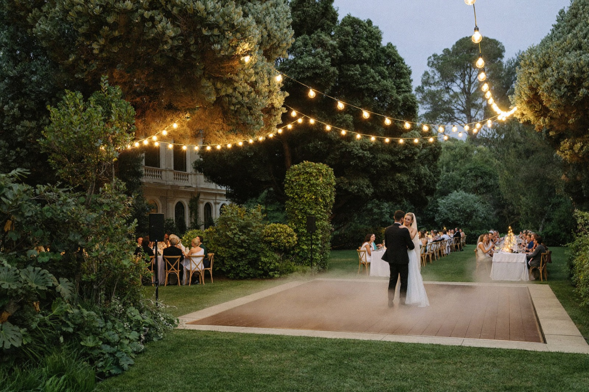

Start booking your Miami wedding vendors at least six months before your date. That is when most of the couples who end up happy reach out to us, and it gives you your pick of the best. Once you are inside four months, availability gets dicey, and the vendors everyone wants are the first to go.
First, congratulations. Planning a South Florida wedding is exciting and a little overwhelming at the same time, and one of the first real decisions you will make is when to lock people in. Here is how the timing actually plays out, from someone who watches it happen every season.
Six Months Out Is the Sweet Spot
Most couples reach out around six months ahead, and that is a good target. You are not rushing, and the calendar is still open enough that you get to choose instead of settling.
Four months is where things start getting dicey. That is when you run into real availability problems, and you lose the luxury of picking the team you actually want. Earlier is always better. Nobody has ever called too soon.

In Florida, Winter Dates Sell Out First
If your date falls in the winter, move sooner than you think you need to. Those are the most competitive months in South Florida, because that is when the weather makes this the place everyone wants to get married. A November through March date fills the good vendors' calendars fast.
A summer date gives you a little more room. A peak-season Saturday does not. Know which one you are working with, and let that set your pace.
Don't Leave the Entertainment for Last
Here is the pattern I see over and over. Couples book the DJ last. In all seriousness, that is not always a problem, but I will say it plainly: fix your priorities.
Barely anyone remembers the food from a wedding. The music, the dancing, the way the room feels when the lighting and the energy come together, that is what people carry home with them. That is the part that makes the night memorable. It is too important to leave as a last-minute thing.
So when you are mapping out who to book and when, do not slot entertainment at the bottom of the list. Give it the same weight you give the venue, and it helps to see what a full wedding build looks like before you decide where your money goes.
What Changes When One Team Runs Everything
The two things you are really paying for with a full-service team are expertise and coordination.
You are not dealing with a guy who does this on the weekends. You are dealing with industry professionals who know the ins and outs of all of it. And you are dealing with one company that makes the music, the lighting, and everything else run smoothly together as a single show instead of a handful of vendors who have never met.
You may pay a little more sometimes, and that is the expertise you are paying for. You can look through events we have produced to see what that coordination actually buys you. It is also worth knowing that when one booking covers the DJ, lighting, and effects at once, that date gets locked across several services in one shot. One more reason to reach out earlier rather than later.
What Actually Locks Your Date
A deposit locks it. Not a nice phone call, not a verbal hold. The deposit.
So do not sit on a proposal for three weeks. Do your research, and then pull the trigger. A production company has more capacity for events than a solo DJ, so it is more often possible to make your date work even on a tighter timeline. But the sooner you book, the better your chance of locking in everything you want for your venue.
Before You Reach Out, Know Two Things
Know your budget, and know what you want.
When a couple comes in without a sense of their budget, the vibe they are going for, or how big they want the production to be, it gets wishy-washy for everyone, and it is harder to give you a real answer. A little clarity up front makes the whole thing smoother, and if it helps, here is a sense of what a build like this runs.
And one more time, because it matters: do not discount the entertainment and then spend the whole budget on flowers. Keep it nice for the photos, of course. But people do not remember your flowers. This is your night. Spend like it.
Tell us your date, your venue, and what you are going for, and we will take it from there. Honestly, we love this part. You enjoy the planning. We will handle the rest. Call us at (786) 302-6056.
Start the Conversation See Our Wedding WorkFrequently Asked Questions
Aim for at least six months before your date. That is when most couples reach out, and it gives you your pick of the best. By four months out, availability gets tight, especially in peak season.
The winter months. That is when the weather makes South Florida the place to get married, so those dates are the most competitive and the first to fill.
Not necessarily. A production company has more capacity than a solo DJ, so your date is often still workable on a shorter timeline. Reach out as soon as you can, because the sooner you book, the better your odds of locking in everything for your venue.
Do not leave it for last, which is what most couples do. The music and the experience are what people remember long after the wedding. Give the entertainment the same priority you give the venue.